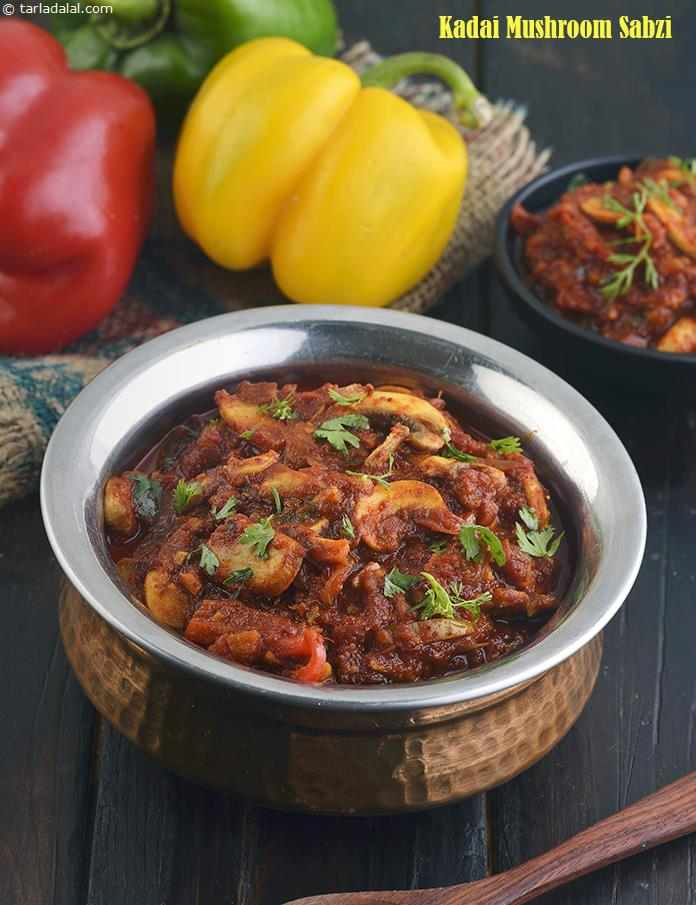

Kadai Mushroom Sabzi
Ingredients
- 2 cups finely chopped tomatoes
- 1 tbsp coriander (dhania) seeds
- 10 whole dry red chillies (pandi) , broken into pieces
- 4 tbsp oil
- 1 tbsp finely chopped garlic (lehsun)
- 1 tsp finely chopped ginger (adrak)
- 1 tbsp finely chopped green chillies
- salt to taste
- 1 tsp dried fenugreek leaves (kasuri methi)
- 1 tsp garam masala
Other Ingredients -->
- 2 cup thickly sliced mushroom
- 1 1/2 tbsp oil
- 1/2 cup sliced onions
- 1/2 cup sliced capsicum
- salt to taste

Methods
Kadai Gravy
- Roast the coriander seeds and dry red chillies lightly
on a non-stick tava(griddle) for 2 minutes.
- Cool slightly and blend in a mixer to a coarse powder.
Keep aside.
- Heat the oil in a deep non-stick pan, add the garlic,
ginger and green chillies and saute on a medium flame
for a few seconds.
- Add the coarsly crushed powder and sauteon a medium
flame for a few seconds.
- Add the tomatoes and salt,mix well and cook on a slow
flame for 8 tp 9 minutes, while stirring occasionally.
- Add rhe kasuri methi and garam masala, mix well and cook
on a medium flame for a few seconds.
- Cool completelyn and keep aside.
How to proceed
- Heat the oil in a deep non-stick pan, add the onions
and saute on a medium flame for 1 minute.
- Add the capsicum and saute on a medium flame for 1
minute.
- Add the mushrooms, little salt and saute on a medium
flame for 2 minutes.
- Add the prepared kadai gravy and 1/2 cup of water,
mix well and cook on a medium flame for 2 to 3 minutes,
while stirring occasionally.
- Serve hot.